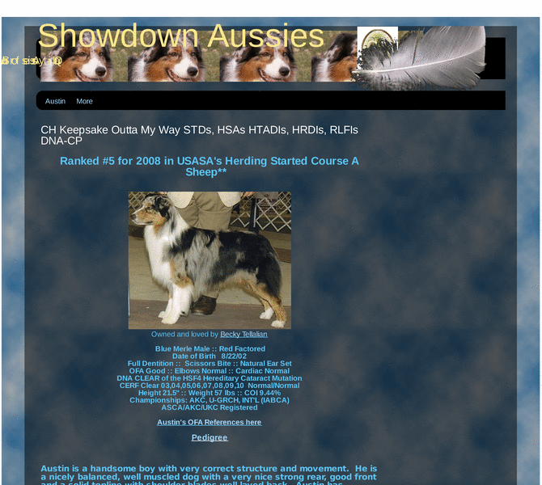

Previewing: Austin's Web Page Previewing: Austin's Web Page 
Use the left/right red arrow controls to navigate through this ring - Click the preview image to visit the member site.

Ch Keepsake Outta My Way STDs, HTADIs, HRDIs, HSAs, DNA-CP *Watch for more titles from this versatile and talented boy, soon! *Look for Austin at upcoming stock dog events!
Austin's Web Page owned by:
 aussiedogs4 aussiedogs4
A member of the original webring since 02/13/2009.
|
|